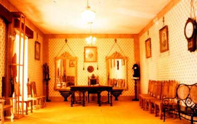
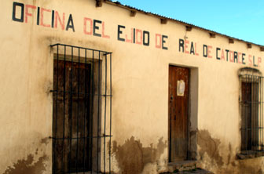
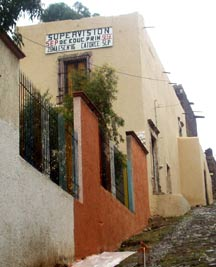
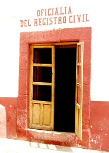

|
THIS IS AN ARCHIVED SITE - ESTE ES UN SITIO ARCHIVADO |
|
Please visit
https://www.realde14.com for the current
site |
|
Visite
https://www.realde14.com para ver el sitio actual |
| Home |
Town |
Area |
History |
Links |
|  |
| Presidencia |
Correo |
Schools |
DIF |
| Clinic |
Oficina del Ejido de Real de Catorce, S.L.P. |
Calle Ramon Corona |
 |
Office of SEP Supervision (School Administration) |
Calle Lerdo |
 |
Office of the Registro Civil |
Calle Constitucion (in the Palacio Municipal) |
 |